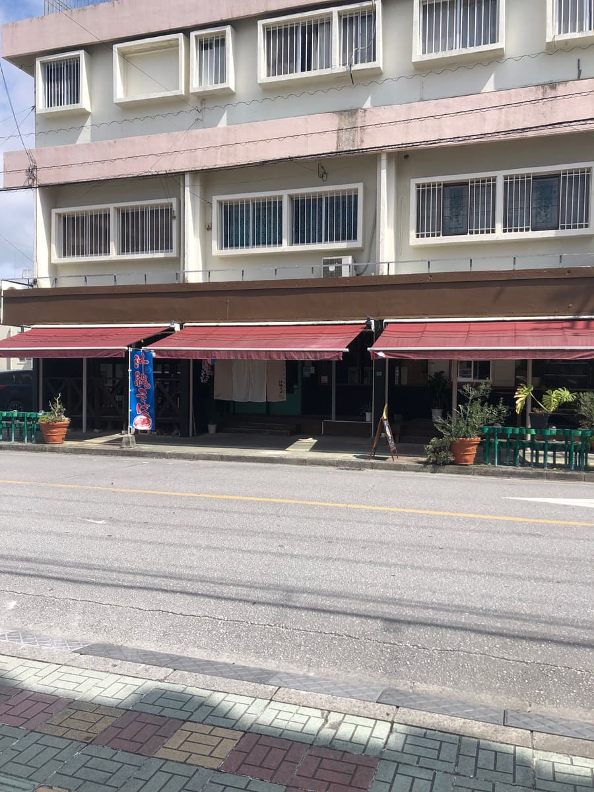
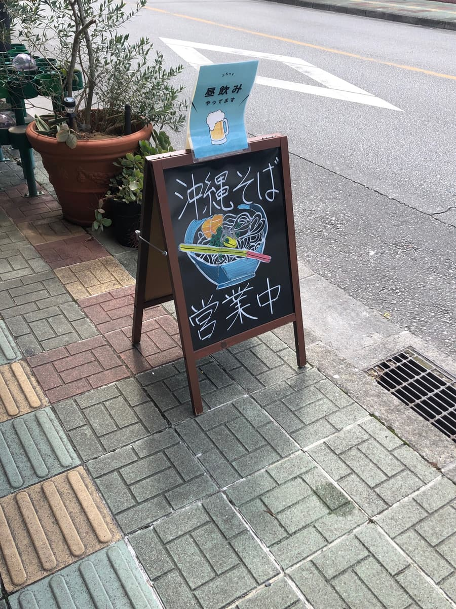
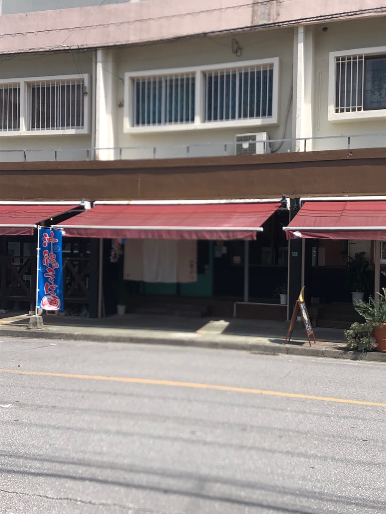
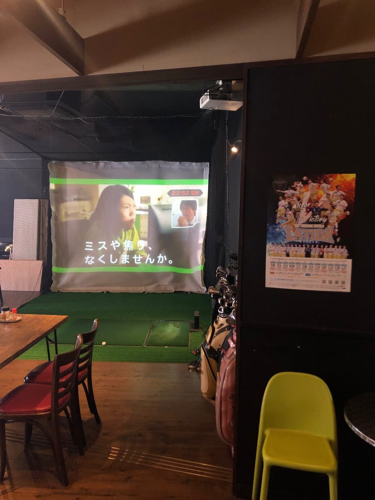
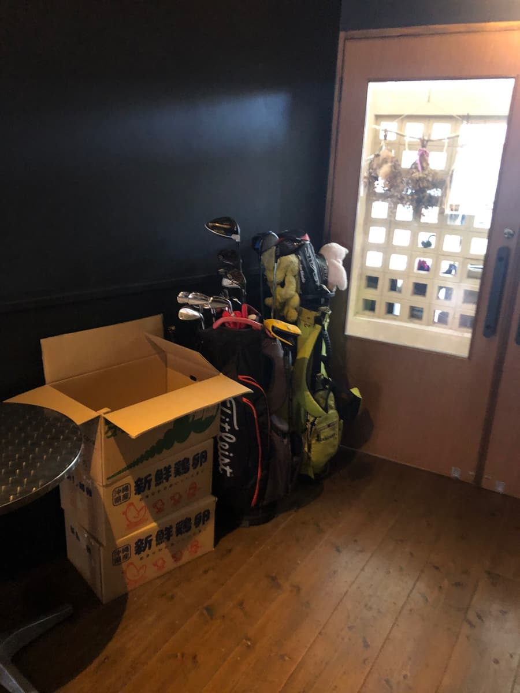
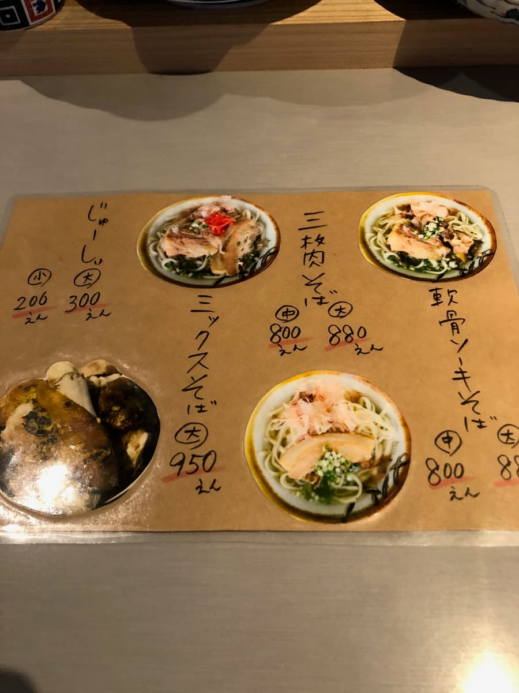
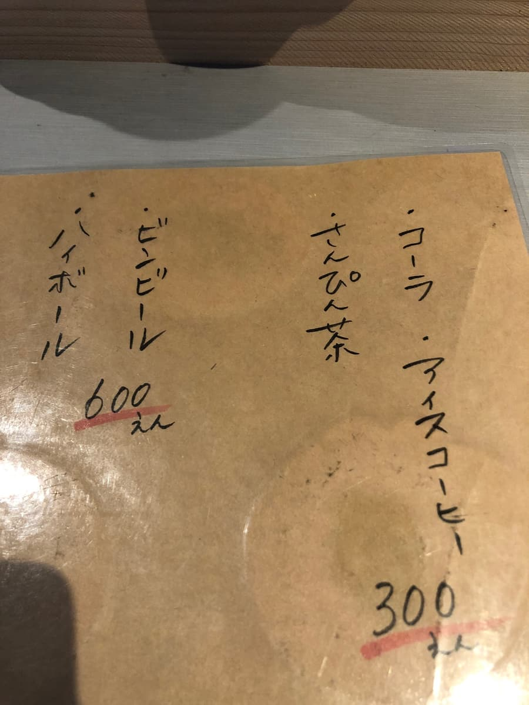
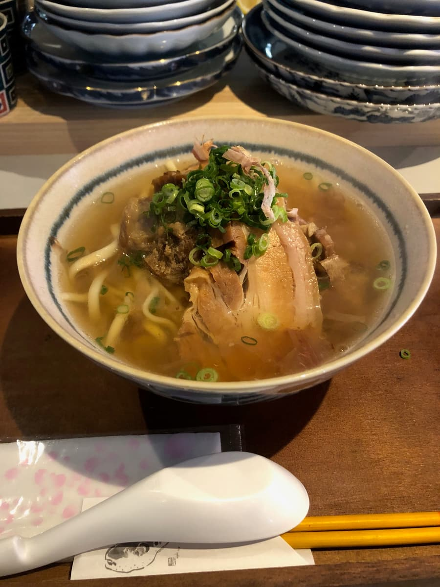
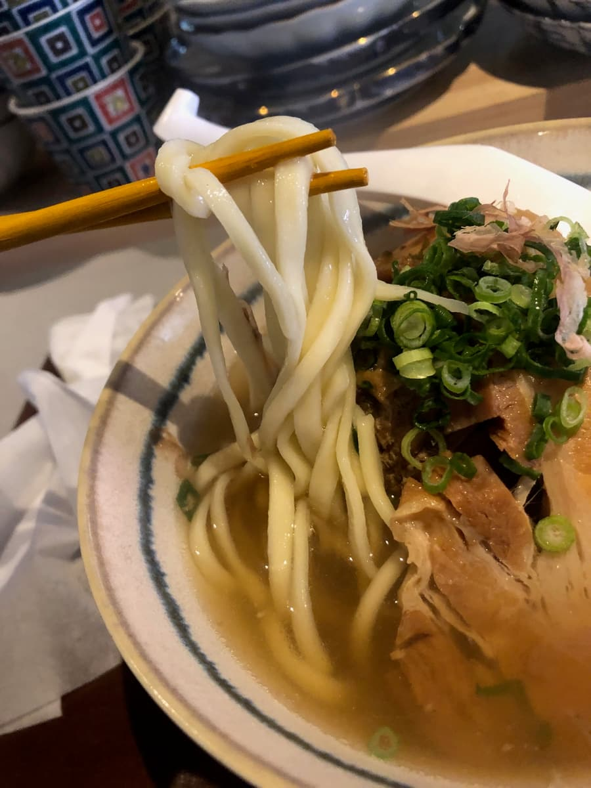

This time I'm introducing "Okinawa Sobaya FLOG (Furoggu)" in Ohigashi, Nago City! I went to eat here in February 2025 😄



This shop was actually featured on the TV program "Uchiran" ✨ Since it had been featured, I got curious and went~!
The shop's exterior is a building with a striking red awning, and "Okinawa soba" banners are put up along the road, so it's easy to spot even while driving. Near the entrance there's a blackboard sign, handwritten with "Okinawa soba — open now", and also "Daytime drinking available 🍺". An Okinawa soba shop where you can drink from noon is pretty rare, isn't it 😄


When you go inside... the first thing that jumps out at you is a golf simulator 😅 No, really, it's a space where you can actually play golf inside the shop. There were golf bags, and simulator footage was being projected by a projector. Golf while eating Okinawa soba!? That's quite a unique combination lol. There are also TV screens and counter seats in the shop, and there's a somewhat bar-like atmosphere too. The direction of enjoying drinks from lunchtime came through clearly 😊


The menu is simple: sanmai-niku soba (medium ¥800 / large ¥880), nankotsu soki soba (medium ¥800 / large ¥880), mixed soba (large ¥950), and jushi (small ¥200 / large ¥300). For drinks, they have everything from sanpin tea, cola, and iced coffee (¥300) to beer and highballs (¥600) — well stocked to suit the daytime drinking style 🍺
This time I ordered the "mixed soba (large) (¥950)". A greedy bowl where you can enjoy both braised pork belly and soft-bone pork ribs!

Looking at the soba brought out after a while, it's piled with plenty of green onion, with braised pork belly and soft-bone pork ribs lined up beneath. It looks quite hearty 😋 First, a sip of the soup. An orthodox soup with a solid bonito broth.

Next I have the noodles. Medium-thick and straight, with a softish texture. Both toppings, the braised pork belly and the soft-bone pork ribs, are moderately infused with flavor, and still have a bit of a sinewy texture.
By the way, as for the customers other than me... everyone was eating set meals with grilled fish! The aroma of grill-roasted fish drifted through the shop, and it looked so delicious, yassa 🐟 Maybe grilled fish is their signature dish. Maybe the grilled fish set meal is more popular than the Okinawa soba? lol. I thought next time I come I'd like to try the grilled fish set meal.
Ume-flavored pickles were served on the table, and they were delicious as a palate cleanser 😄 The refreshing ume flavor was a welcome touch between bites of soba.
Rating (9/15): All in all, the Okinawa soba is orthodox and simply tasty. It's a unique shop with the surprising character of an interior where you can play golf, and you can drink during the day too. When you stop by the Nago area, why not visit once, combined with an unusual experience 😊
Noodles: ★★★☆☆（3）
Soup: ★★★☆☆（3）
Toppings: ★★★☆☆（3）